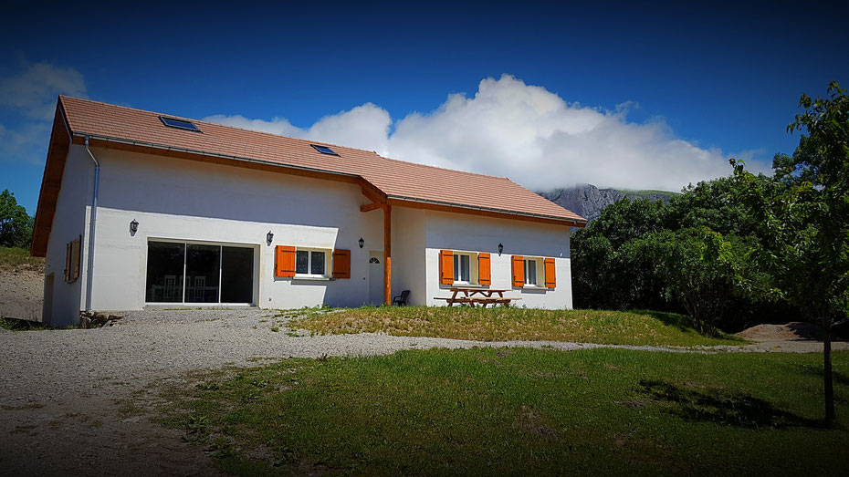
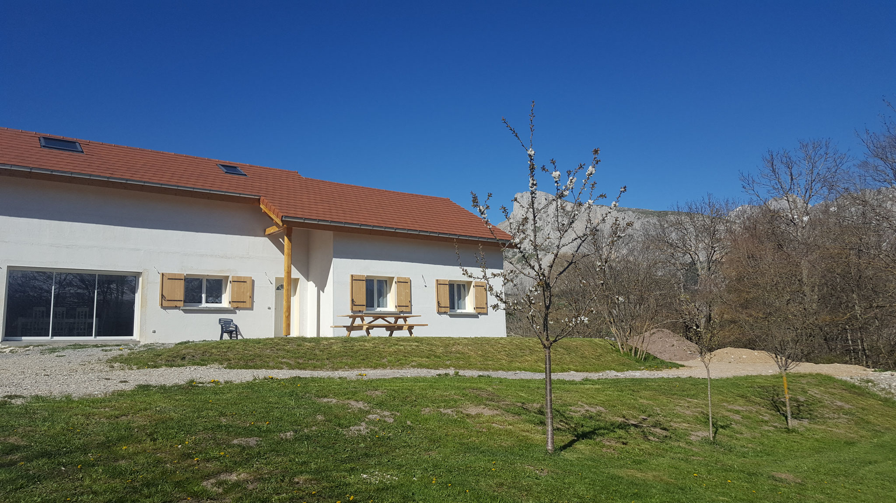
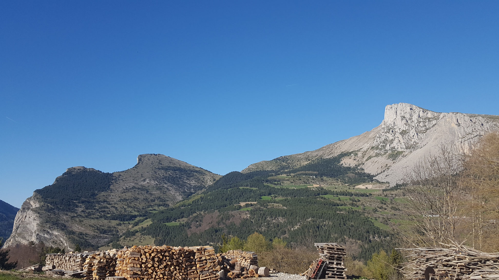

Deux chambres ouvertes sur le massif, dans une maison où l’on vient pour souffler.
Au Villard Joly, Agnès et Alain accueillent les voyageurs dans une adresse simple et chaleureuse. L’hiver comme l’été, les paysages du Dévoluy donnent le tempo.
Maison · jardin · terrasse · parking
Un point de départ
pour prendre le large.


Deux chambres.
Une même envie :
être bien.
02
Le séjour,
sans détour.
Deux chambresjusqu’à 6 personnes
Petit-déjeunerinclus
Chambre 2 personnes70 €
Chambre 4 personnes130 €
Ouverturetoute l’année